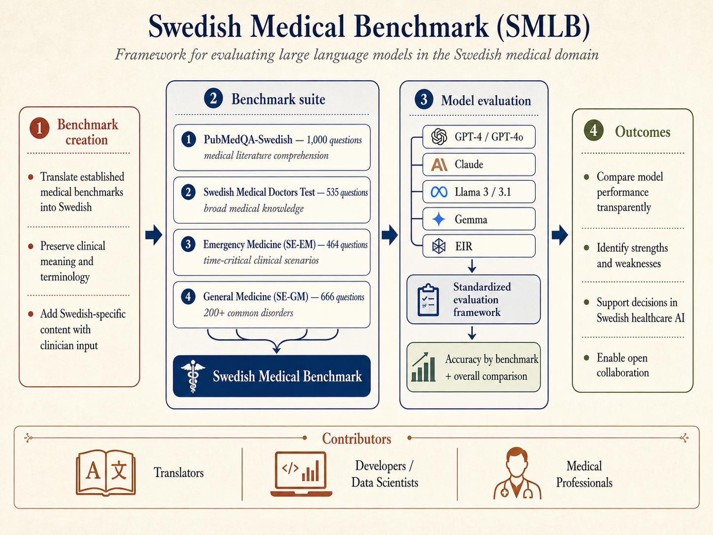

PubMedQA-Swedish
Translated biomedical literature comprehension with yes, no, and maybe answers.
A framework for evaluating large language models in the Swedish medical domain.

SMLB measures how language models handle Swedish medical terminology, clinical reasoning, exam-style questions, emergency scenarios, and general medicine cases. It is designed for transparent model comparison, research, and medical education experiments.
Translated biomedical literature comprehension with yes, no, and maybe answers.
Clinical exam-style questions for broad Swedish medical knowledge.
Time-critical clinical scenarios where immediate assessment matters.
Primary-care-oriented cases covering more than 200 common disorders.
Accuracy is reported as a percentage. A dash means the model has not been evaluated on that benchmark in the current table.
| Model | PQ-S | SMDT | EM | GM | SMB |
|---|---|---|---|---|---|
| GPT-4o | - | 83.18 | 90.51 | 88.88 | - |
| GPT-4 | 53.90 | 79.07 | 93.10 | 93.09 | 75.57 |
| Claude-3.5 | - | 83.74 | - | - | - |
| Llama3-70b | 56.00 | 69.91 | 74.35 | 67.57 | 64.88 |
| Gemma2-9b | - | 61.31 | - | - | - |
The repository includes a compact native Swedish GRPO dataset for reward-verifiable medical multiple-choice experiments. It includes deterministic reward code, a local Mac smoke check, and a CUDA training script for TRL.